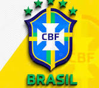

🏆 A História do Futebol no Brasil
O futebol foi introduzido no Brasil no final do século XIX, por Charles Miller. Desde então, o esporte se tornou parte da cultura nacional. O Brasil é o país com mais títulos de Copa do Mundo, somando cinco conquistas: 1958, 1962, 1970, 1994 e 2002.
⚽ Principais Tarefas no Futebol
- Treinamento e preparação física dos atletas
- Organização de campeonatos nacionais e estaduais
- Formação de categorias de base (futebol de base)
- Gestão de clubes e federações
- Promoção de valores como trabalho em equipe e disciplina
📹 Vídeo: Grandes Momentos do Futebol Brasileiro
🌟 Realizações
O Brasil revelou alguns dos maiores jogadores da história do futebol, como Pelé, Zico, Romário, Ronaldo, Ronaldinho Gaúcho e Neymar. Além disso, os clubes brasileiros conquistaram títulos importantes como a Libertadores, Mundial de Clubes e diversas Copas nacionais.